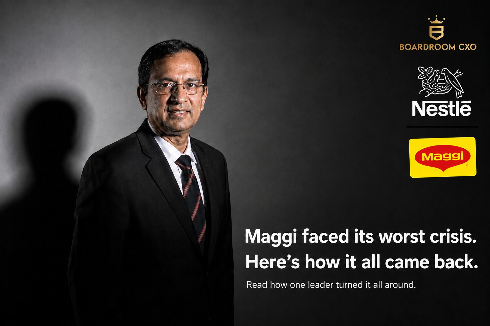

In June 2015, 38,000 tonnes of Maggi noodles were pulled off Indian shelves and destroyed. Not recalled. Destroyed.
Nestle India's largest brand had an 80% market share and ₹2,000 crore in annual sales. It went to zero in weeks. That is the moment Suresh Narayanan walked in as Managing Director.
His own words when he got the call: "My first reaction was, why me?"
Who Is Suresh Narayanan?
Suresh Narayanan had already led Nestle through the 2008 financial downturn in Singapore and run the company's Egypt operations during the Arab Spring. Both were external shocks the business had to absorb. The Maggi ban was different. It was a food safety order, a trust collapse, on a consumer brand three generations of Indian families had grown up eating. He took the MD role at Nestle India in the middle of that collapse and led the company until his retirement in July 2025.
How Did Suresh Narayanan Handle the Maggi Ban?
Most leaders in that position go into damage control: press statements, legal teams, aggressive PR. He did not.
He chose transparency with regulators over fighting them. Honest communication over spin. And he kept the internal culture intact, which is the part nobody talks about when they tell this story. A brand can survive a bad quarter. It has a much harder time surviving a leadership team that panics in front of its own employees.
Five months later, Maggi was back on shelves.
The Numbers After the Crisis
By 2019, Nestle India delivered nine consecutive quarters of double-digit value growth. By the time Narayanan retired in July 2025, the company had crossed ₹20,000 crore in revenue, roughly ten times what Maggi alone contributed annually before the ban.
He also expanded rural distribution from roughly 40,000 to over 90,000 villages across India, because he understood where the next wave of consumer demand was actually coming from. Not just metros, but tier 2 cities, smaller towns, and markets most FMCG leadership teams were still treating as secondary.
The Line Worth Sitting With
If the decision is right, the credit goes to the team. If it is wrong, I am responsible.
That sentence is not a leadership-poster line. It is an operating principle, and it explains why the internal culture held together during the crisis. People do not panic in front of a leader who has already told them, in advance, who owns the downside.
Common Mistakes Boards Make When Hiring for a Crisis
Boards evaluating candidates for a high-stakes turnaround tend to repeat the same errors.
They look for a fighter, not a communicator. The instinct in a crisis is to hire someone combative, someone who will push back hard against regulators and critics. Narayanan's approach was the opposite: cooperate with regulators, communicate honestly, and let the transparency do the work that a legal fight could not.
They ignore the internal audience. Most crisis-response plans are built for customers, media, and regulators. Employee morale is treated as a side effect rather than a variable to actively manage. A company that loses its internal culture during a crisis has a much longer recovery even after the external problem is resolved.
They hire for the crisis and stop evaluating for the decade after it. The harder skill was not surviving the ban. It was reading, correctly, that rural India and tier 2 markets were where the next decade of growth would come from, and building distribution into 90,000 villages to capture it.
A Framework for Identifying This Kind of Leader
- Ask how they behaved when they had no good options. Narayanan's answer during the Maggi ban was transparency over spin. Candidates who default to PR and legal maneuvering under pressure tend to protect the brand's image before they protect the underlying trust.
- Ask what happened to the team, not just the numbers. A leader who can name specific steps they took to protect internal morale during a hard period is describing a repeatable practice. A leader who only remembers the external outcome is describing luck.
- Ask where they placed the next bet, once the crisis was over. Recovery is not the finish line. Narayanan used the reset to expand into markets the company had underweighted for years. The best crisis leaders treat the recovery as a platform for a bigger decision, not a return to the status quo.
Why This Belongs in the Boardroom, Not Just the Case Study
Business schools teach the Maggi crisis as a case study on brand recovery. What gets less attention is what it revealed about the senior leader who actually handled it, and that is the part boards should be studying when they hire. We have written about Harsh Mariwala's decision to fight instead of sell when Hindustan Lever tried to kill Parachute, and about Sanjiv Mehta's habit of opening every meeting with a safety review after Bhopal. Narayanan's story completes the same pattern: the leaders worth hiring are not the ones who never face a hard room. They are the ones who are shaped by it, and who can name exactly what they did differently because of it.
Good times do not build that kind of CXO. Hard rooms do.
Frequently Asked Questions
Who is Suresh Narayanan?
Suresh Narayanan is the former Chairman and Managing Director of Nestle India, who took the role in 2015 during the Maggi noodles ban. He had previously led Nestle's Singapore business through the 2008 downturn and its Egypt operations during the Arab Spring, and retired from Nestle India in July 2025.
What happened during the Maggi crisis in 2015?
Indian regulators banned Maggi noodles over lead content concerns in June 2015, forcing Nestle India to destroy roughly 38,000 tonnes of product. The brand held about 80% market share and ₹2,000 crore in annual sales before the ban took it to zero within weeks.
How did Suresh Narayanan handle the Maggi ban?
He prioritized transparency with regulators over fighting them, chose honest communication over aggressive PR, and worked to keep Nestle India's internal culture intact. Maggi returned to shelves five months after the ban.
How much did Nestle India grow under Suresh Narayanan?
Nestle India posted nine consecutive quarters of double-digit value growth by 2019, and crossed ₹20,000 crore in annual revenue by the time he retired in July 2025.
How did rural distribution change under his leadership?
Nestle India's rural distribution expanded from roughly 40,000 to over 90,000 villages, reflecting a deliberate push into tier 2 cities and smaller towns.
Frequently Asked Questions
Who is Suresh Narayanan?
Suresh Narayanan is the former Chairman and Managing Director of Nestle India, who took the role in 2015 in the middle of the Maggi noodles ban. He had previously led Nestle through the 2008 financial downturn in Singapore and run the company's Egypt operations during the Arab Spring. He retired from Nestle India in July 2025.
What happened during the Maggi crisis in 2015?
In June 2015, Indian food safety regulators ordered a ban on Maggi noodles over lead content concerns, forcing Nestle India to pull and destroy roughly 38,000 tonnes of product. Maggi held around 80% market share and generated about ₹2,000 crore in annual sales before the ban took its sales to zero within weeks.
How did Suresh Narayanan handle the Maggi ban?
Suresh Narayanan chose transparency with regulators over contesting them, prioritized honest public communication over aggressive PR and legal pushback, and worked to keep Nestle India's internal culture and employee morale intact through the crisis. Maggi returned to Indian shelves five months after the ban, in November 2015.
How much did Nestle India grow under Suresh Narayanan?
By 2019, Nestle India delivered nine consecutive quarters of double-digit value growth following the Maggi crisis. By the time Suresh Narayanan retired in July 2025, the company had crossed ₹20,000 crore in annual revenue, up from roughly ₹2,000 crore contributed by Maggi alone at the time of the 2015 ban.
How did Nestle India's rural distribution change under Suresh Narayanan?
Nestle India's rural distribution network expanded from roughly 40,000 villages to over 90,000 villages under Suresh Narayanan's leadership, reflecting a deliberate push into tier 2 cities and smaller towns rather than relying solely on metro markets.
Related Reading
Sanjiv Mehta: The HUL Leader Who Never Forgot Bhopal
Read → R · 02 Founder Leadership · July 2026Refused to Blink: The Boardroom Lesson Behind Marico's War With Hindustan Lever
Read → R · 03 Headhunting · June 2026Why the Best Performance Marketers in Jewelry Are Not on Naukri
Read →Need a leader who has actually run a hard room?
We look past the resume line for the moment that tested a candidate, and how they led through it. Brief us on your next CXO mandate and we will tell you what the market actually has to offer.
Brief Us on a Mandate